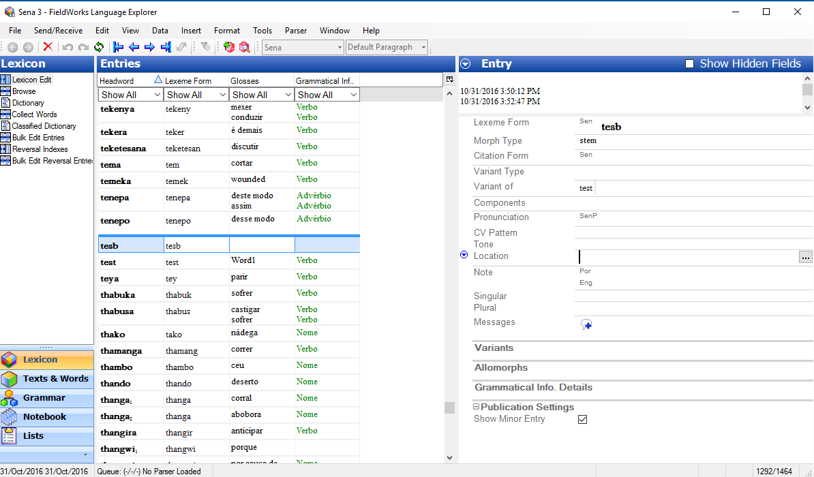
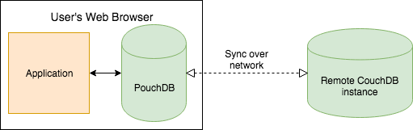
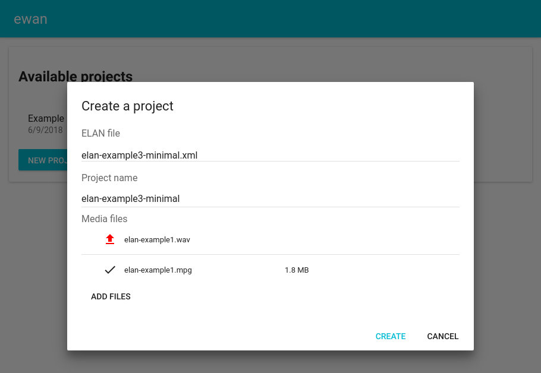
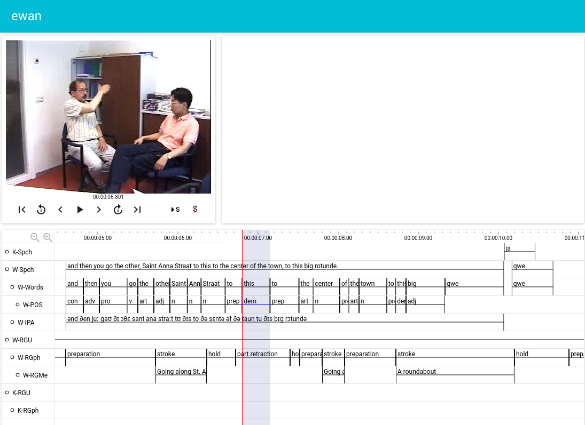
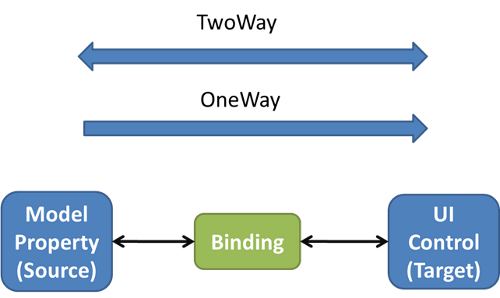

Choosing the Right Tools for a Language Documentation App
(You can find the app this post is about here, and its source on GitHub.)
1 Introduction
Technology has been increasingly recognized as critical for successful language documentation and development. The premier conference in this field, ICLDC, writes on its front page (emphasis mine):
Over the past two decades endangered language documentation and conservation has (re)emerged as a distinct subfield of linguistics with its own methodology and theoretical underpinnings. This reemergence has occurred in parallel with a dramatic technological evolution which has put advanced computing tools in the hands of language documenters and those striving to reclaim and maintain endangered languages. Moreover, technology is also changing traditional user roles, blurring the lines between linguist, speaker, and activist by providing increased access to information. Digital tools have the power to greatly accelerate the language work, but the digital realm also brings new challenges for endangered languages, which sometimes struggle to thrive in a digitally-mediated world.
Despite the increasing awareness of its importance, adoption of technology1 in language documentation (langdoc) has been sluggish. There are many reasons for this (see Bird's recent paper), but the most important is that there is simply not enough labor.
Software development is time-consuming work: done adequately, it is a demanding technical activity, and done well, it is as much ethnographic as it is technical. And since almost nobody in langdoc can afford a team of salaried engineers2, most langdoc apps are made by developers who are juggling many other responsibilities, making it difficult for them to meet their users' needs with the time they have available.
If getting more people involved isn't possible, then all that's left is to make developers more productive. But how might that be possible?
I see an opportunity: using better tools. So far, the community has not strayed too far from very common tools (JS, Java, C#, Python), and it has not yet solved certain problems, including good UX, collaboration, cross-platform portability, and offline support. Choosing the right programming language and libraries for the task can make development that might have been an aching slog nearly trivial. Of course, a new tool should not be used merely for novelty's sake. As long as we pick tools by their usefulness, and not their fashionability or novelty, we might be able to make better use of the precious little time and energy langdoc developers have to do their work3.

To investigate this possibility, I recreated a subset of the popular linguistic annotation tool, ELAN, using the tools I considered most promising for langdoc apps. If I'm interested in langdoc apps, why did I clone ELAN, which is a linguistic annotation app? In short, because (1) this let me skip the design phase, (2) ELAN is relatively small, (3) ELAN's use-patterns are similar enough a langdoc app's, and (4) ELAN has non-trivial features that a simple CRUD app does not, ensuring that I would test my tools against hard problems.
This post shares my experience in building this ELAN clone, EWAN. In section 2, I will outline my motivations for why I chose the tools I used. In section 3, I will discuss my implementation. In section 4, I go into more depth on whether the tools I chose did in fact make a difference. In section 5, I conclude.
2 Requirements and tool choices
To guide my choices, I paid particular attention to four qualities that I thought would be important for the kind of langdoc app I'm imagining. These are: being built on the most suitable platform; having a minimum of UI code; having offline support; and being built with the most suitable language.
2.1 Suitable platform: browser
15 years ago, the only platform that would have made sense for a langdoc app was the desktop. These days, there are three: the desktop, the web browser, and the mobile phone.
Desktop applications allow your app the most freedom to do what it wants, but they have critical shortcomings that limit their ease of use and therefore adoption. Depending on how the application was developed, it may be limited to a specific platform–for example, SIL's FLEx is limited to Windows operating systems. And even if the program does support most desktop platforms, installation may be complicated if the program holds the user accountable for installing language runtimes, codecs, etc. Since users are usually not technically trained, this presents a significant barrier to entry.
The web browser, by comparison, is slightly constrained in terms of its facilities for app developers4, but it is still powerful enough to support almost any kind of app. Importantly, there is no installation5 required with a browser application: no codecs to install, no fuss about which Java version you have installed, no operating system heartache. Further, the technologies involved (HTML, JS, CSS) were designed to be easy to learn. This has a double benefit: it makes the apps a little easier to develop (since the developers likely already know the tools involved), and it also makes it very easy to develop some kind of plugin system for power users to write scripts to help them accomplish their tasks. (More on this in section 3.6.3.)
The mobile phone is the most constrained of the three platforms, primarily due to its form factor. However, this has also enabled its ubiquity and portability: there are often phones where computers can't be because of financial or logistical limitations. This makes it uniquely suited to apps that are designed for community members. Aikuma has enjoyed success as a langdoc tool for audio recordings, and there's good reason to think they could be a critical part of documentation and revitalization strategies that heavily involve community members. However, the traditional langdoc tasks that you'd imagine a documentary linguist engaging in are not most effectively carried out using a phone. Moreover, the platform is fragmented: there are two major operating systems, Android and iOS, which require different development tools6.
There is a clear winner, then, if we intend to build a comprehensive app that is to serve the major requirements of doing langdoc. The web browser has the ease of use, maturity, and comprehensive feature set to serve as a foundation.
2.2 Minimal UI development: Material-UI

{kind=link}
Apps share much in common in their UI code: most popular apps rely on (I'd say) at most a couple dozen foundational component concepts. A high-quality UI library can save a great amount of time that would have been spent making buggy reimplementations of common components. There were many choices for this piece, but I chose Material-UI for its long-term stability, its excellent support for mobile devices, eye to usability, and comprehensive component selection. (This also committed me to using React, the most popular browser UI framework for a few years now.)
2.3 Offline-first: PouchDB

Having an app that still works when you're offline is important if you intend your app for use in the field. This is a historically unusual (though increasingly common) requirement for web browsers, so there was only one suitable option for a library that would enable this: PouchDB. PouchDB is actually a full JavaScript implementation of a more traditional DB that sits on a server, CouchDB. This means that PouchDB has all the power of a traditional database, but its methods can be directly invoked from the browser app code instead of over a connection. Moreover, since CouchDB was designed to tolerate poor network conditions, PouchDB can gracefully and losslessly merge data that's been kept apart for a while (the kind you'd expect if, say, two linguists glossed hundreds of sentences and tweaked lexicon entries in the absence of an internet connection), and as a bonus, it makes Google Docs-style concurrent editing easy (see section 3.6.2).
2.4 Cheap maintenance: ClojureScript
Software requires maintenance. Apps necessarily make assumptions about the behavior of all of the code they use, and when that changes, the app's code might also need to change to keep working.
This code can be used within the app itself, like a JSON parser inside a program, or it could be used in the making of the app. Code in this latter category (compilers, testing frameworks, deployment tools, etc.) also changes, and nowhere has this been more true than in the JavaScript ecosystem since the mid-2000's. For complicated reasons, an entirely new set of utilities, would appear on the scene once every 1-2 years, often often with significant improvements. (A brief history.) This leaves you with two options if you are using last year's tools: (1) double down and accept the fact that your tools might be obsolete and unmaintained in a few years' time, or (2) accept that last year's tools must be abandoned, and migrate to this year's tools. Both lead to a great amount of work that has nothing to do with delivering features to users.
I figured that it would be best to avoid this if possible. Looking around, the only language that impressed me with its cheap maintenance, both with respect to tooling and libraries, was ClojureScript, a Lisp-family language that compiles to JavaScript. Its standard build tool, Leiningen, has kept its place as most popular build tool since at least 2010 (!). The language itself is also remarkably stable: the core of ClojureScript (which tries to remain as close to Clojure as possible) has not been significantly changed since 2009 and looks nearly identical to ClojureScript written today. That can't be said for 2009 JavaScript, which is now separated from the present time by several ECMAScript specification updates and shifts in style practices. On the library side, the ClojureScript ecosystem is large enough for that you can be reasonably certain the community will keep critical parts of infrastructure maintained for years to come.
Beyond the cheapness of maintenance, ClojureScript also has benefits conferred upon it by its place in the Lisp family of languages, which will be discussed later.
3 Implementation and comparison
In about 200 hours of development time, I was able to produce a limited port of ELAN, which I call EWAN. It is not a suitable replacement for the desktop application because of its lack of some core features. But it was complete enough for me to feel confident that I had understood how much my tools had helped me compared to their more common counterparts. In this section, I will discuss both what I was able to achieve and extensions that I could were easily within reach with just a little more development time. You can try out the app for yourself, and view its source code.
3.1 Loading and representing ELAN files

EWAN is able to parse existing ELAN files that conform to ELAN Annotation Format v3.0. The user is prompted to select the file from their file system and upload any accompanying media files. The HTML5 File API made this part a breeze to implement.
At this point, after the file has been read, it is an XML string. ClojureScript has a built in XML parser, clojure.data.xml, which parses the string into an XML object structure, and that in turn is converted into a format which uses Clojure-native data structures called Hiccup.
The end result is that something like this:
<ANNOTATION_DOCUMENT VERSION="3.0"> <HEADER TIME_UNITS="milliseconds"> <MEDIA_DESCRIPTOR MEDIA_URL="file:///D:/Data/elan/elan-example1.mpg" MIME_TYPE="video/mpeg"/> </HEADER> <TIME_ORDER> <!-- ... --> </TIME_ORDER> <!-- ... --> </ANNOTATION_DOCUMENT>
is turned into this:
[:annotation-document {:version "3.0"} [:header {:time-units "milliseconds"} [:media-descriptor {:media-url "file:///D:/Data/elan/elan-example1.mpg" :mime-type "video/mpeg"}]] [:time-order ;; ... ] ;; ... ]
(In Python, this would be something like ["annotation-document", {"version": "3.0"}, .... A :keyword is a special Lisp type that you can think of as an enum value.)
This is helpful because we're going to be editing the file a lot, and it's easiest to work with native data structures than with strings or XML nodes.
A brief digression: it's worth noting how ClojureScript's recommended style helps you clearly communicate intent by encouraging you to write many small functions with helpful names. For example, this is the function that is used to turn the raw file string into Hiccup:
(defn eaf-str->hiccup "Takes the raw text of an EAF file, parses it into XML, and gives the hiccup analog of that XML." [str] (-> str unsafe-remove-whitespace xml/parse-str xml->hiccup))
(In Java-style syntax, this means xml2hiccup(xml.parseStr(unsafeRemoveWhitespace(str)))). Each step of this process has been factored into another function, and each function's name tells you what it does at a high level. In an imperative language, you can also achieve this style, but it is tempting and often easier to put all of your work into a single loop, making it harder to see at a glance all the conceptually distinct tasks that are being mixed together7.
3.2 Ensuring data integrity with spec
Back to our main thread, we now have a representation of the ELAN file in Clojure-native data structures. If you're like me, you should now be feeling nervous about how we'll ensure that this giant structure remains valid for export at any moment.
Fortunately, Clojure has an amazing core library called spec that allows us to easily do this. Spec not only helps us check whether the shape of the data is correct (this is what a static type system would also be able to accomplish), but it also lets us easily check whether the meaning of the data is correct. This lets you, e.g., write a rule that declares "All ID's that are referenced by attributes like ref-annotation on other nodes must actually exist on a node somewhere in the document." This is something most type systems would not be able to accomplish for you.
Let's see what that looks like for a toy example: consider an XML format that has books and authors, where author elements have an id attribute and book elements have an author-id attribute which must refer to an author element's id attribute. This is the XML:
<library> <authors> <author id="Plath"/> <author id="Valmiki"/> <author id="Apuleius"/> </authors> <books> <book id="Ramayana" author-id="Valmiki"/> <book id="To The Lighthouse" author-id="Plath"/> <book id="Orlando" author-id="Plath"/> <book id="The Golden Ass" author-id="Apuleius"/> </books> </library>
In hiccup, this is:
[:library [:authors [:author {:id "Plath"}] [:author {:id "Valmiki"}] [:author {:id "Apuleius"}]] [:books [:book {:id "Ramayana" :author-id "Valmiki"}] [:book {:id "To The Lighthouse" :author-id "Plath"}] [:book {:id "Orlando" :author-id "Plath"}] [:book {:id "The Golden Ass" :author-id "Apuleius"}]]]
Now, we begin the implementation of the spec by defining the constituent elements of library:
;; import clojure.spec as s (require '[clojure.spec.alpha :as s]) (defn elt-name "Returns a function that returns true if its argument is equal to `name`" [name] (fn [tag-name] (= name tag-name))) ;; an id is something that makes the single-argument function `string?` return true (s/def ::id string?) ;; an author element is a vector of two items: a tag name that has the value ;; `:author`, and a map (i.e., a hash-map) that contains a key `:id`, whose spec ;; we just defined above (s/def ::author (s/cat :tag (elt-name :author) :attrs (s/keys :req-un [::id]))) ;; the authors element is a vector of at least one item: a tag name that has the ;; value `:authors`, and child elements which conform to the `::author` spec (s/def ::authors (s/cat :tag (elt-name :authors) :children (s/* (s/spec ::author)))) ;; an author-id is also a string (s/def ::author-id string?) ;; a book element is a vector of two items: a tag name that has the value `:book`, ;; and a map that contains the keys `:id` and `:author-id` (s/def ::book (s/cat :tag (elt-name :book) :attrs (s/keys :req-un [::id ::author-id]))) ;; the books element is a vector of at least one item: a tag name that has the ;; value `:books`, and child elements which conform to the `::book` spec (s/def ::books (s/cat :tag (elt-name :books) :children (s/* (s/spec ::book)))) ;; the library element is a vector of three items: a tag name that has the value ;; `:authors`, an element that conforms to the `::authors` spec, and an element that ;; conforms to the `::books` spec, in that order. (s/def ::library (s/cat :tag (elt-name :library) :authors (s/spec ::authors) :books (s/spec ::books)))
Now, we can check data structures against any part of the spec and ensure that our data conforms to it:
(s/valid? ::id "Ulysses") ;;=> true (s/valid? ::id 2) ;;=> false (s/explain ::id 2) ;;=> val: 2 fails spec: ::id predicate: string? (s/valid? ::library [:library [:authors [:author {:id "Plath"}] [:author {:id "Valmiki"}] [:author {:id "Apuleius"}]] [:books [:book {:id "Ramayana" :author-id "Valmiki"}] [:book {:id "To The Lighthouse" :author-id "Plath"}] [:book {:id "Orlando" :author-id "Plath"}] [:book {:id "The Golden Ass" :author-id "Apuleius"}]]]) ;;=> true
Note that our implementation isn't done yet: if we have a book with an :author-id that doesn't exist, our spec will still be happy with it since all we require of the :author-id is that it be a string:
(s/valid? ::library [:library [:authors [:author {:id "Plath"}]] [:books [:book {:id "The Golden Ass" :author-id "Apuleius"}]]]) ;;=> true
To amend this, we write a function that checks the structure and ensures that every :author-id corresponds to an :id that actually exists on an author element, and then we revise our spec for ::library from earlier by composing this function using s/and with what we have already:
(defn valid-ids [library] ;; use destructuring assignment to pull out elements (let [[library-tag [authors-tag & author-elts] [books-tag & book-elts]] library ;; obtain the :author-id values and put them into a set author-ids (->> author-elts (map (comp :id second)) set)] (->> book-elts ;; this function looks at every book and returns true ;; if there is at least one book elt that has an :author-id ;; value that is not present on an :author element (some (fn [[_ {:keys [author-id]}]] (not (some? (get author-ids author-id))))) not))) (s/def ::library (s/and valid-ids (s/cat :tag (elt-name :library) :authors (s/spec ::authors) :books (s/spec ::books))))
Now, it behaves like we want it to:
(s/valid? ::library [:library [:authors [:author {:id "Plath"}] [:author {:id "Valmiki"}] [:author {:id "Apuleius"}]] [:books [:book {:id "Ramayana" :author-id "Valmiki"}] [:book {:id "To The Lighthouse" :author-id "Plath"}] [:book {:id "Orlando" :author-id "Plath"}] [:book {:id "The Golden Ass" :author-id "Apuleius"}]]]) ;;=> true (s/valid? ::library [:library [:authors [:author {:id "Plath"}] [:author {:id "Valmiki"}] [:author {:id "Apuleius"}]] [:books [:book {:id "Ramayana" :author-id "Valmiki"}] [:book {:id "To The Lighthouse" :author-id "Plath"}] [:book {:id "Orlando" :author-id "Plath"}] [:book {:id "The Golden Ass" :author-id "Apuleius"}] [:book {:id "The God of Small Things" :author-id "Roy"}]]]) ;;=> false ;; Roy is not listed as an author
Clojure's pre and post conditions make it easy for you to insert a spec check wherever you're making changes to the data. These checks will run during development, but you may opt to have them compiled out when you publish your app, allowing you to have this safety during development without incurring a performance hit in production. Further, when your value fails a spec check, you can ask spec to explain what went wrong8. For a good explanation of how spec provides safety beyond what (traditional) type systems provide, see this blog post.
In short, the critical thing here is just that clojure.spec is lets us remain confident that our data still represents a valid ELAN file as we perform changes to it. The JS ecosystem does have similar libraries, but they are not as feature-complete or concise as clojure.spec.
3.3 Data persistence and offline support with PouchDB
Now that we have the ELAN file in a format we can work with, we can persist it to PouchDB so it'll be available to the user across sessions. This is easy: we create the database by using simple JS interop, and whenever we make a change to it, we use PouchDB's put method to persist the change. Doing that in JS:
var db = new PouchDB('ewan-db'); // ... db.put(updatedDoc, function(error, response) { // ... });
… looks a lot like doing it in CLJS:
(def db (js/PouchDB. "ewan-db")) ;; ... (.put db updated-doc (fn [error response] ;; ... ))
As discussed above, since the database exists on the user's hard disk and not remotely over an internet connection, this gives us offline support for free. Had we used a traditional database, we would have had to use PouchDB or a similar library built on top of browser storage API's, essentially meaning that we'd need to implement a persistence layer twice.
There is also a further benefit: since we don't need to interact with a remote database, we do not need to write any server code! Traditionally, an application like this would send an HTTP request to a server, and the server would communicate with the database and also perform any actions not directly related to manipulations of the data in the database. If an application relies heavily on actions like these, such as sending emails or doing lots of computationally intensive media processing, it is probably a good idea to introduce this extra layer between the client and the database. But if your app only rarely needs to do anything other than change and read data in the database, it is a waste of effort to have this extra layer between the client and the database, provided your database can provide all the needed security controls9. Since PouchDB sits on the client and can directly communicate with CouchDB (which has acceptable security features), we can skip the app server layer entirely10.
3.4 Free UI with Material-UI
k
The entire project's UI was implemented using Material-UI. In the screenshot above, custom components are implemented on top of the basic components Material-UI provides. Material-UI comes with a massive icon library, which I used for the buttons on the video player. The most basic parts of ELAN's UI have been carried over, including the time cursor, the basic tier view, and the time bar.
The version of Material-UI that I used, 0.x, is not mobile-friendly, but its newest release, 1.0, is responsive! I don't know if you'd want to use a complicated app like ELAN on your phone, but I could see this being an incredible time saver for other, less complicated apps. An adequate mobile interface to your app that comes for free is a big deal.
3.5 Managing state with re-frame
As I just mentioned, to manage state in my app, I used re-frame. Re-frame is a framework for single-page apps that essentially achieves the same things a typical model–view–controller framework does: it keeps models of your app data, allows your UI elements to consume data from those models, and gives you a way to make changes to your models.

In this last function, however, it imposes a constraint. Other comparable frameworks, such as Angular or Ember, allow you to both (1) directly modify UI state (like the value of a text input field), which is then propagated directly to model state; and (2) modify model state, which is then propagated to UI state. This is called two-way binding. Re-frame (along with other frameworks like React), on the other hand, disallows the first kind of modification, which leaves model state propagating to UI state as the only way for your app to make changes. (UI state can still modify application state somehow, obviously–it is just through indirect means. For re-frame, the UI element dispatches a re-frame event, and the event is allowed to update the model.)
Why take away this freedom from the user? If only changes of type (2) are allowed, then the functions which re-frame and React use to generate HTML from data become very predictable functions of their inputs, which makes reasoning about them incredibly easy. Further, if changes can only propagate in one direction, then the chain of updates can only be as long as the height of your UI component tree.
On the other hand, if you allow changes of type (1) to occur, this makes the relationship between models and views many-to-many. If you are not careful, this will lead to complicated cascades of changes from the change of a single value as they propagate up and down your component tree, making execution in your app difficult to follow and comprehend.
So re-frame, strictly speaking, does take some expressive freedom away from you as a user, but in exchange, you get the peace of mind that comes with having strong expectations about how your app must behave when you are trying to reason about it. The codebase I ended up with, while small (~3000 lines of code) and written by one person, was big enough for me to appreciate the productivity gains that come with this check on cognitive strain. My code had had distinct and minimally-interleaved flows of execution, and obviously there was no trouble keeping UI in sync with the data. Had I continued developing this project further into an even larger one, I would have felt confident that I would be able to keep it readable and easily extensible everywhere.
3.6 Extensions
So far we have surveyed what I actually implemented. There were other features that I did not have the time to implement, but got close enough to to have a concrete implementation plan.
3.6.1 Collaboration
The way I like to think about CouchDB is this: CouchDB is bad at everything, except syncing. And it turns out that's the most important feature you could ever ask for, for many types of software. – Jason Smith
As mentioned above, PouchDB, the persistence layer in this project, is a full implementation of CouchDB, the major difference being that PouchDB runs in an end user's internet browser while CouchDB runs on a dedicated machine like a traditional server. CouchDB was designed to make synchronization of work easy, and that also extends to PouchDB.
With some small updates to the UI (mostly consisting of a login system), an organization would be able to set up their own instance of CouchDB and use it to share work with each other. For example, suppose Alice and Betsy are collaborating on annotating an hour-long video in EWAN with Alice taking the first half and Betsy taking the latter half. They would be able to do their work in parallel and merge their work at the end so that the CouchDB server has what both of them has done. (And then, since the instances of PouchDB running on their own machines would also receive the changes from the master CouchDB server.) This kind of collaboration could also occur if, say, Alice and Betsy are annotating different videos.
3.6.2 Real-time editing
It is also possible to extend the program to make the interaction above happen in real time: instead of syncing after they've completed their work, the work Alice and Betsy are doing could be getting synced up in real time just like on Google Docs. PouchDB has a live replication mode. Adding support for this requires a little bit more support on the application level to handle the incoming changes, but this work pales in comparison to the work it would have taken to implement this from scratch: the hard part of this feature (sharing changes in real time across clients and handling the conflicts that will inevitably emerge) has already been taken care of by PouchDB. This feature probably would have taken at least 10 if not 100 times more work without PouchDB, depending on the quality of the implementation. Of all the tools I chose for this project, PouchDB is the one that impressed me the most for its potential to make challenging multi-user features straightforward to implement.
3.6.3 Scripting for power users
Power users in any kind of application delight in the opportunity to use a scripting language to take care of tedious or challenging tasks. Because this app was built in the web browser, we already have a language with excellent support at our disposal that was designed to be easy for users to pick up and write small snippets with: JavaScript.
Since ClojureScript compiles to JavaScript, it is very easy to make such a system available. On the development side, a special module containing user-facing functions that are meant to be used from a JavaScript console could be created. ClojureScript modules are exported as JavaScript globals, so the module would be visible to the user as something like [window.]ewan.script. The functions could do most anything you could imagine. It might look something like this:
// a collection of functions const s = window.ewan.script; // imagined feature 1: a programmatic interface for making arbitrary // substitutions for regular expressions s.replaceAll("tierId", /colour/g, "color"); // imagined feature 2: a more complicated interface that lets you apply a // function to all annotation values on a tier. Suppose we made a transcription // error in our words and forgot to lengthen [u] in front of voiced consonants // in English. We could use this function to correct the issue: s.updateAnns("phoneticTierId", function(ann) { const text = ann.value; const uIndex = text.indexOf("u"); // check if we have u followed by a voiced consonant (just consider [b] and [d] // here for simplicity) and replace with uː if it is if (uIndex > -1 && uIndex < text.length - 1 && ['b', 'd'].indexOf(uIndex.charAt(uIndex + 1)) > -1) { ann.value = text.substring(0, uIndex) + "uː" + text.substring(uIndex + 1); } }); // imagined feature 3: `afterAnnotationCreated`, which executes // an arbitrary function after an annotation is created on a // specified tier. E.g., the sentence "glass isn't strong" // might be turned into four tokens, "glass", "is" "n't", and // "strong", and then these tokens would be turned into // individual annotations on the child tier s.afterAnnotationCreated("parentTierId", function(ann) { // tokenize a sentence using a remote service--this could be // somewhere on the web or running on the user's machine const response = await fetch("https://my.tokenizing.service/?s=" + ann.value); const tokens = await response.json(); for (let token of tokens) { s.addAnnotation("childTierId", {parentRef: ann.annotationId, value: token.value}); } });
A bit more on feature 3, since it has a lot of potential: although we used tokenization as an example use case for a hook like this, we could use it for automating virtually any task a user might perform after taking some kind of action in the app. Beyond tokenization, we could use the same kind of pattern to automate forced alignment, morphological parsing, syntactic parsing, semantic parsing, and other annotation tasks that may be tedious, difficult, or both.
The possibilities are endless with a user-facing API, and it's worth stressing that this feature was made possible by our choice of platform: had we not been using the browser, we would have had either implement an entire scripting language or embed an existing one (like Lua) into the app, neither of which gives us the rich tooling and ecosystem that JavaScript has.
4 Analysis
In this section, I'll compare each of my tools to their most common alternative. Specifically, I will discuss my choice of platform, my approach to UI components, my choice of database, and finally, my choice of language.
4.1 Browser vs. desktop and mobile
While mobile phones have an undeniable place for apps that plan to involve community members or that must be used in circumstances where a laptop is impractical, they are not suited for the kind of detailed data professional users will be entering and viewing in a langdoc app.
It would likely be possible to make a similar app for the desktop while avoiding most of its pitfalls (cross-platform support, complicated installation of dependencies, etc.), but without a positive reason to pick the desktop to begin with, the browser seems to be the clear winner.
4.2 Material-UI vs. homemade components
Historically, most langdoc apps I'm aware of that targeted the browser implemented their own UI elements, either from scratch11 or with the assistance of only a CSS framework12. Now that high-quality component libraries are available (a recent development), it cannot be overstated how much langdoc app developers could benefit from them. There is no longer a reason to bear the burden of creating and maintaining basic UI components like input elements and dropdown menus when open source libraries like Material-UI could take care of all this work for them.
When so much work is avoided by using a UI library, I don't think it would be justifiable to not use one if you're making a langdoc app targeting the browser. If I had created all of my UI elements from scratch with the same level of quality for EWAN, I expect I would have needed on the order of 100 more hours (i.e., ~50% of my total development time). And it would have been even more work to implement the support Material-UI has for mobile devices.
4.3 PouchDB + CouchDB vs. traditional database with a server application layer
Because CouchDB is a web server, you can serve applications directly [to] the browser without any middle tier. When I’m feeling punchy, I like to call the traditional application server stack “extra code to make CouchDB uglier and slower.” – J. Chris Anderson
If CouchDB does user authentication (it’s got a “signup” button right on the home page, for crying out loud), paging, indexing, full-text search, geo data, and it all speaks HTTP, well… what does that actually leave us to do on the server?
Take a long look in the mirror, and really ask yourself! And yes, for those of you who do machine learning and scientific computing and business intelligence, I can already see you raising your hands, but for the rest of us who get paid to write Twitter clones, the answer is: not much. Your average CRUD app can magically transform into a PGPD app (PUT, GET, POST, DELETE), you can throw it up on CouchDB with some nice HTML and CSS to style it, and be at your local brewpub by 3. Or maybe you could just send the default Futon interface to the client and tell them you wrote it. – Nolan Lawson
As we have seen, using PouchDB with CouchDB has some unbelievable benefits: it can remove the entire server application layer from your app, and gives you both real-time and eventual (offline) synchronization for free.
Too good to be true? Yes, it would be, if we left it at that. There are some notable downsides. Nolan Lawson has gone into them at length, and I'll focus on the two issues I think are most worrying for langdoc apps: a limited security model, and use of a non-relational data model (documents).
4.3.1 Security Model
A single CouchDB instance, like a single SQL database instance, has many databases. A database is just a collection of many documents (or rows, for a SQL DB) that are all of the same type. CouchDB supports only three kinds of security models for a given database:
- Everyone can do everything.
- Some people can write (some documents), everyone can read (all documents).
- Some people can write (some documents), some people can read (all documents).
This is a less powerful security model than some databases offer: PostgreSQL offers row-level security, which in PouchDB would be the equivalent of specifying what users are allowed to do per document.
How much of a problem is this for langdoc apps? This entirely depends on the operational structure of langdoc efforts that an app is supposed to serve. This coarse security model seems inadequate in two circumstances, which could conceivably arise in a langdoc project:
- For a given type of data, a subset of editors may edit only a specific subset of the data
- Some documents (a lexical item, a recording, etc.) need exceptional privacy (e.g., at the informant's request)
For either of these, the CouchDB community has discovered a well-known workaround: the database is partitioned into as many databases as are needed to accommodate the different security configurations, and then the documents are sent to and retrieved from the appropriate database. For example, a recordings database might be split into recordings-public (for everyone) and recordings-private (only for privileged users).
This complicates application code slightly, as we now need to remember to query both databases instead of just the recordings database. This is not a significant burden as long as the security permutations are not too numerous, and it seems unlikely that there would be a proliferation of security classes in the average langdoc project.
4.3.2 Schemas and document-orientation
Now I turn to the problem of document-orientation. While document-orientation has some benefits, such as ease of use and, in PouchDB's case, already being in our native data structure (JSON), there are downsides. The biggest one is that we don't have the data integrity guarantees that come with using a SQL database: in principle, you can insert anything into a PouchDB database.
However, much of this disadvantage is mitigated by our use of spec (as seen in section 3.2). Assuming we use ClojureScript and write comprehensive specs in our app13, our only remaining worry would be that a malicious user could tamper with client code and deliberately insert bad data into PouchDB14, at which point there would be nothing left to stop this data from propagating to other nodes. This is a possibility, but not one that should be very concerning assuming all users with edit permissions are trusted15.
4.3.3 Conclusion
We have seen these two shortcomings–coarse security settings and document-orientation–and noted that both have acceptable workarounds. One final word of caution is that while PouchDB has a good query language based on MongoDB's, it is a little idiosyncratic, and sometimes writing an advanced query is necessary, especially if your documents have a lot of relationships which would have required joins in SQL.
If these are the only problems there are, the mind boggles at how much time using the PouchDB/CouchDB architecture saves compared to a traditional three-layered architecture with an application server in between the database and the client. As the quotes at the beginning of the section point out, some apps cry out for server code, but for CRUD apps (which a langdoc app undoubtedly is), server code is often just a repetition of what we have already written elsewhere. And let's not forget the first reason we looked at PouchDB in the first place: we get offline-first support for free.
4.4 ClojureScript vs. JavaScript
Who cares what technology you use, as long as it works, and both you and your users are happy with it? That's the beauty of new things: there's always a new one coming along. Don't let the pursuit of new, shiny things accidentally become your goal. Avoid becoming a magpie developer. Be selective in your pursuit of the shiny and new, and you may find yourself a better developer for it. – Jeff Atwood
Our hypothesis was that if we wrote our software in Lisp, we'd be able to get features done faster than our competitors, and also to do things in our software that they couldn't do. And because Lisp was so high-level, we wouldn't need a big development team, so our costs would be lower.
[…]
What's so great about Lisp? And if Lisp is so great, why doesn't everyone use it? […] Lisp is so great […] because it is simply the most powerful language available. And the reason everyone doesn't use it is that programming languages are not merely technologies, but habits of mind as well, and nothing changes slower. – Paul Graham
Let me begin this controversial section by repeating what should go without saying: there is no best programming language. A language can be more or less suited to a circumstance, but it's questionable to speak of an ideal programming language devoid of context. Let us ask the question in the circumstance we have been considering, then: what is the best programming language for creating a langdoc app that is comprehensive, maintainable, and extensible with the extremely finite resources that are available for it?
There are many compile-to-JS languages16, but the only two that seemed like they could possibly fit this bill were JavaScript and ClojureScript. Let's examine them in turn and see what they bring to the table in this specific context that we're considering.
4.4.1 JavaScript
- The good
- Learnable in a day
- Largest extant language ecosystem
- The bad
- Inconsistent language semantics
- Ever-changing language standard which requires the use of JS-to-JS compilers and causes code and tool churn
- Very small core language that does not scratch every abstraction itch
Even JavaScript's most faithful users agree that it suffers from many unfortunate design decisions that reflect its creator's assumption that it would be sprinkled in by novice users, handfuls at a time. The ECMAScript committee has been busy fixing some of these deficiencies, but this has put a great maintenance burden on the community, which has been sinking much time into keeping up with the latest tools and features.
4.4.2 ClojureScript
- The good
- Extraordinarily consistent semantics
- Expansive core library rich in data structures and abstractions
- Stable: has not appreciably changed since 2009
- The bad
- Very unfamiliar to most programmers, out of reach for non-programmers
- Need to learn two languages (JS and Clojure) to use it
Learning a Lisp-family language is already a daunting task, and learning ClojureScript actually requires you to learn two: Clojure, and its host language on this platform, JavaScript. The boon the Clojure wizards tell you is at the end of this journey is a language that is both streamlined for practical use and uncompromising on semantic elegance, but needless to say, many langdoc app developers would not be keen on spending ~100 hours they could have been spending delivering features on learning a new language unless they're certain it would be worth their while.
4.4.3 Conclusion
Unlike, say, a choice of database, I think a choice of programming language is in large part personal. Lisp fans are incredulous when they see programmers turn to less powerful but syntactically prettier languages, but the fact of the matter is that people have subjective reactions language syntax that have real effects on their productivity. And as if this handicap weren't enough, ClojureScript also all but demands that its users abandon object-oriented programming for functional programming.
Obviously, I have found that ClojureScript the most productive browser language for me, but I can't assert that it would be for you too with the same confidence that I recommended PouchDB. So, all I can do is summarize why I feel ClojureScript would be my choice if I were sitting down to write a language app:
- I will (almost certainly) never need to change my code to keep up with a language standard
- I will (almost certainly) never need to replace my compiler or my build tool because it became obsolete
- ClojureScript is a programmable programming language17 which lets you create domain-specific languages when appropriate
- ClojureScript's semantics are exceptionally consistent, which helps you avoid obscure bugs and ugly code
- ClojureScript's core data structures are practical and richly featured
- ClojureScript's core library is expansive, offering high-quality abstractions for polymorphism, stream processing, concurrency, and others, letting you focus on building your app
- ClojureScript's tooling is stable and high-quality, offering free dead code elimination, hot code reloading, and more
Personally, when I looked at all these benefits (most of which JavaScript is unable to offer) and the time it would take for me to learn ClojureScript, I decided it would be worth my while to make the investment. I feel that my decision has been validated by my experience writing EWAN, which would have taken significantly more time had I used JavaScript.
5 Conclusion
In this post, I have tried to show the extent to which using different tools would facilitate app development in the specific conditions langdoc developers work in. I concluded that the web browser is the only proper platform choice; that you must use a UI library for the app; that a PouchDB + CouchDB solution that omits an application server layer could be an enormous timesaver and enable the app to work offline; and that ClojureScript has many productivity-enhancing features JavaScript cannot offer.
It's my hope that langdoc developers will fully examine all the technical options that are available to them as they build their apps in the future, and that they will be bold in learning and using a new tool if they decide that it could help them get better features to their users faster. In langdoc, we don't have much time.
Footnotes:
For this post, I'll treat technology as interchangeable with application software ("apps"), since this is by far the most important kind of technology in langdoc.
Two notable exceptions I'm aware of include SIL for FieldWorks and MPI for Psycholinguistics for ELAN.
I am ignoring the cost associated with using one tool over another: some tools are going to take longer to learn, or require more cajoling to get your team to adopt it. A full discussion is out of scope, but I'll say that for the kind of work I'm investigating in this post—developing a comprehensive langdoc app—the cost of actual development ought to dwarf the cost of learning how to use the tools. Therefore we may ignore the cost of learning the tools.
The missing features are, in my opinion, irrelevant for a langdoc app: it doesn't matter that threading and OS-mediated access to peripherals like printers aren't available.
Actually, I think a "real" web app would have to have a little more packaging, such as that of a Chrome Extension. This is necessary to support certain features like offline function. Notably, Aikuma-NG chooses this approach.
There's been a lot of work on attempting to make frameworks that allow you to write code for both operating systems (most notably React Native) and even a browser as well (Apache Cordova), but the consensus I've pieced together is that while these are fine for getting 90% of the correct behavior, getting the remaining 10% both done and consistent across all target platforms is hellishly difficult and riddled with performance issues. See Udacity's experience with React Native for one perspective.
See Abhinav Sarkar and Kartik Gupta's talk beginning at 6:36 for a comparison of their legacy Go code and equivalent Clojure code that demonstrates this beautifully.
The validation mechanism spec provides is also accomplishable in your everyday object-oriented, imperative language, probably by making an instance method AnnotationDocument.validate() that runs after any mutating method, but this is missing a couple of features spec has. First, the language needs to support conditional compilation to avoid having the check included at runtime. Second, this approach does not give you explanations of failing specs. Third, a Clojure spec allows you to do property-based testing, which checks user-supplied properties against generated data.
For another example of a way toa chieve this architecture, see PostgREST, a library that provides a REST API on top of any PostgreSQL database. See also Postgraphile for a GraphQL equivalent.
In the event there is a feature that does require this layer, there are no barriers to adding this layer only in the parts of the app that require it: the two architectures can coexist at once.
The Online Linguistic Database does not use a component library and is structured as a server-side app, though both of these choices probably have more to do with when it was created (~2011) than anything: single-page apps were rare, and component libraries didn't really exist yet.
Other programming languages you might use in conjunction with PouchDB, like JS, also have similar libraries, like js.spec.
This might suggest that if an attacker can edit client code that he can make any kind of change to the database, but this is not true. An attacker could do anything they want to to their local instance of PouchDB, but if they tried to sync these changes to the shared CouchDB instances, only the changes that the attacker has permission for on their CouchDB user account would successfully sync.
It's also worth noting that there's a plugin for a relational API for PouchDB.
There included Kotlin, Scala.js, OCaml/Reason, and Dart, among others.
This essay is the best explanation of the value of macros and Lisp in general that I have read, and remains fairly unbiased.